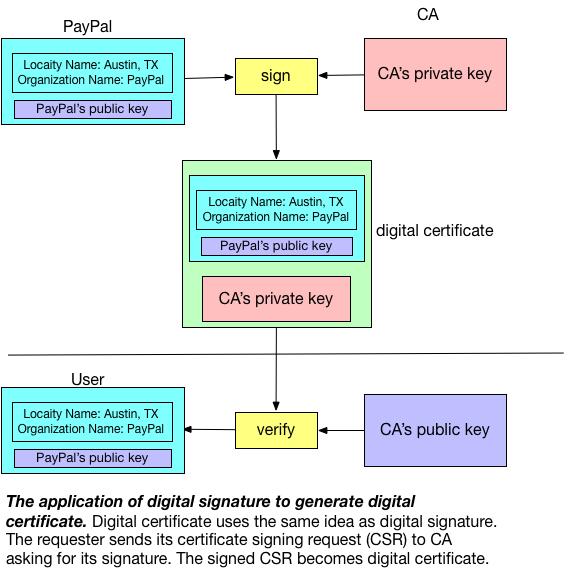
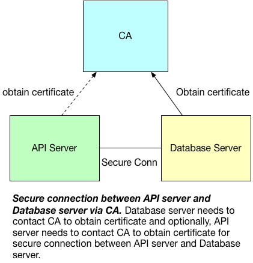
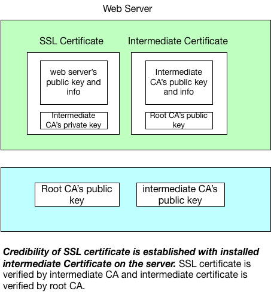

Secure Connection with MariaDB: A Conceptual Approach
In this post, I discuss how we can have a secure connection with MariaDB by first understanding the computer science fundamentals behind the steps. Once we have built the concept model, the steps linked above are self-explanatory. In addition, this post applies the same concept to understand SSL ccertificate.
Concepts
The key concept behind secure connection is certificate, which relies on digital signature. The following picture shows the key idea of digital signature:

Suppose PayPal wants to ask the personal information from the end user. To allow user verify that PayPal indeed sends the message and such message (e.g., "Please enter your personal info") is not modified, PayPal will use his private key to sign the message and distribute his public key to the end user. If the user can decode that message with PayPal's public key, then end user can confirm two pieces of information:
- The sender is PayPal assuming the public key at hand truly belongs to PayPal (Authentication)
- The message is not modified in transit (Integrity)
Now, let's examine further on Authentication. In the above scheme, the end user obtains public key from PayPal in order to decode the message that PayPal sends. This can be problematic: how do we know the public key the end user obtained is truly sent by PayPal? In other words, if a server owned by malicious attacker sends the public key to the user as if the server itself owned by PayPal, then the end user personal information will be in danager: of course the end user can use the public key from the malicious server to verify the authenticity and integrity of the message sent by malicious server; then the personal information sent by the user will be on the malicious server instead of on server owned by PayPal.
To patch the loophole mentioned above, we rely on a trusted third party to help user to verify the publick key is truly owned by the claimed party (e.g., public key we obtained from "PayPal" is truly owned by PayPal). Such trusted third party is called Certificate Authority (CA). CA verifies the ownership of a public key by issuing digital certificates, which essentially a digital signature signed by CA on a specific message sent by the public key owner. The following picture demonstrates this concept:

The most commonly seen example of digital certificate is the TLS/SSL server certificate, which is a certificate that server needs to present to the client during initial connection setup when establishing a secure connection required by TLS/SSL Protocol. The following picture shows the digital certificates used by this site, which is certified by COMODO (one of CA providers) and issued to Cloudflare, the domain name server provider:
A special message sent by the public key owner (e.g., PayPal) to obtain CA digital certificate is called Certificate Signing Request (CSR). For example, to create a private key (e.g., server-key.pem) along with CSR (e.g., server-req.pem) on Mac, one can do:
$ openssl req -newkey rsa:2048 -days 365000 -nodes -keyout server-key.pem -out server-req.pem
Generating a 2048 bit RSA private key
..............+++
.......................................+++
writing new private key to 'server-key.pem'
-----
You are about to be asked to enter information that will be incorporated
into your certificate request.
What you are about to enter is what is called a Distinguished Name or a DN.
There are quite a few fields but you can leave some blank
For some fields there will be a default value,
If you enter '.', the field will be left blank.
-----
Country Name (2 letter code) []:
State or Province Name (full name) []:
Locality Name (eg, city) []:
Organization Name (eg, company) []:
Organizational Unit Name (eg, section) []:
Common Name (eg, fully qualified host name) []: Zeyuan's laptop
Email Address []:
Please enter the following 'extra' attributes
to be sent with your certificate request
A challenge password []:
At this stage, avid reader like you might notice that there can still exist potential loophole: how do we know the public key the user obtained from "CA" is truly owned by CA? Here, CA makes an exaception here: CA issues its own CA digital certificate by signing on its own using its own private key (such digital certificate owned by CA is called CA certificate). Then we rely on regulation and industry auditing to ensure CA providers can play as a trusted third party.
One concept needs to clarify is that CA is not resources controlled by serveral public providers: large organizations usually have their own CAs as part of their own public key infrastructure. For example, if a company decides to build their own private cloud, they may have their own CAs to help with internal network traffic encryption. To show a concrete example, we can generate our own CA certificate like below:
# Generate CA private key
$ openssl genrsa 2048 > ca-key.pem
Generating RSA private key, 2048 bit long modulus
........................+++
........................................................................................................................+++
e is 65537 (0x10001)
# Self-signed CA certificate
$ openssl req -new -x509 -nodes -days 365000 -key ca-key.pem -out ca-cert.pem
You are about to be asked to enter information that will be incorporated
into your certificate request.
What you are about to enter is what is called a Distinguished Name or a DN.
There are quite a few fields but you can leave some blank
For some fields there will be a default value,
If you enter '.', the field will be left blank.
-----
Country Name (2 letter code) []:
State or Province Name (full name) []:
Locality Name (eg, city) []:
Organization Name (eg, company) []:
Organizational Unit Name (eg, section) []:
Common Name (eg, fully qualified host name) []:Zeyuan's laptop
Email Address []:
Normally, in an organization setting (e.g., build an internal private cloud), several concepts emerge with CA certificate: root certificate, intermediate certificate, and chain of trust. The following picture demonstrates this concept:
As one can see in the picture, root CA certificate is issued by root CA itself, and such certificate is called "root certificate". The reason for such naming reflects such CA is the root in the tree structure, which means a point of ultimate trust for a CA hierarchy. The CA in the middle of the picture holds "intermediate certificate", which is a certificate signed by another intermediate CA or a root CA. Intermediate CA can sign CSR as if it is root CA. Requester (e.g., PayPal)'s certificate obtained via this way is secure because each CA in the CA hierarchy is validated by its ancestor, which can be traced back all the way to the root CA. Thus, requester's certificate can be treated as if it is directly obtained from root CA, the ultimate trusted party.
Take building private cloud as an example, one usage scenario of CA hierarchy is to eastablish secure connection between API server and database server. The following picture shows such organization:

There are two things need to note in the picture: one is the dot line between CA and API server, which indicates they are optional. TLS/SSL protocol does not enforce the client (e.g., API server) to present certificate (i.e., one-way TLS). However, if the database is configured to enable two-way TLS (MariaDB), then it is necessary for client to obtain certificate as well. The second is authentication and encryption is a separation of concern: for one-way TLS, we only care about encryption of API access to database and we can choose different method to perform authentication (e.g., user and password).
Examples
Secure Connection with MariaDB
Now, with the concept model we build so far, we can easily understand the listed step about setup secure connection with MariaDB, which have both CA and MariaDB sit on the same server and use two-way TLS for both authentication and encryption of database access.
SSL Certificate
For security connection, web server needs to obtain SSL certificate by sending CSR to CA. In addition, the web server usually also installs intermediate certificate to establishes the credibility of SSL Certificate by tying it to CA’s root certificate. The following picture shows why this works:

With intermediate CA's public key, client can assume the web server's public key and information is verified by the intermediate CA. With root CA's private key, client can assume the intermediate CA is verified by the root CA and thus, client knows the web server's public key and information is verified by root CA and by chain of trust, web server's SSL certificate can be trusted.